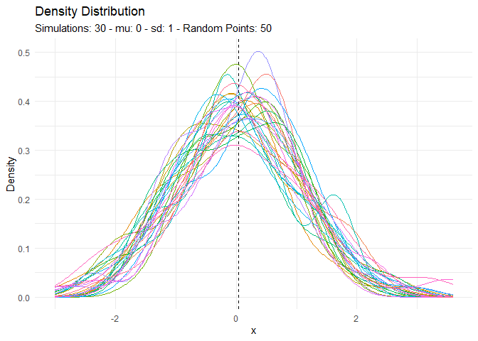
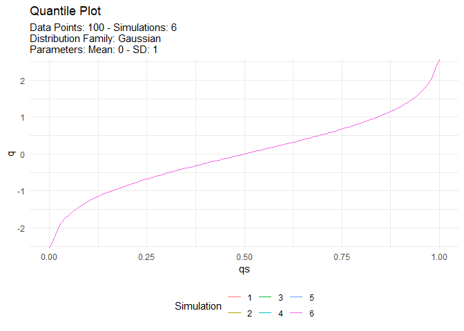
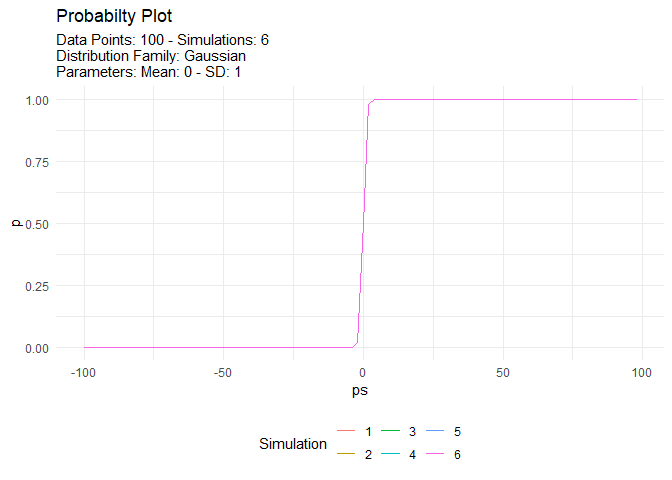
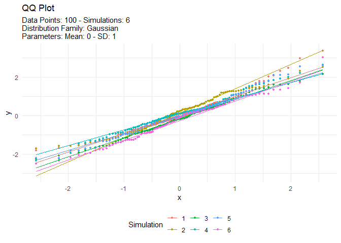
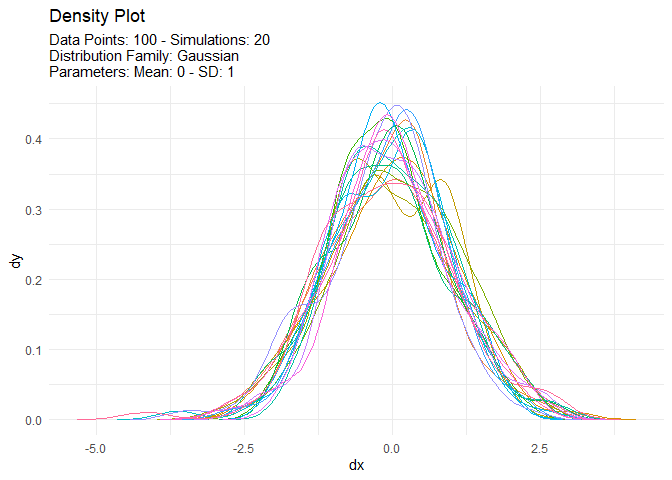
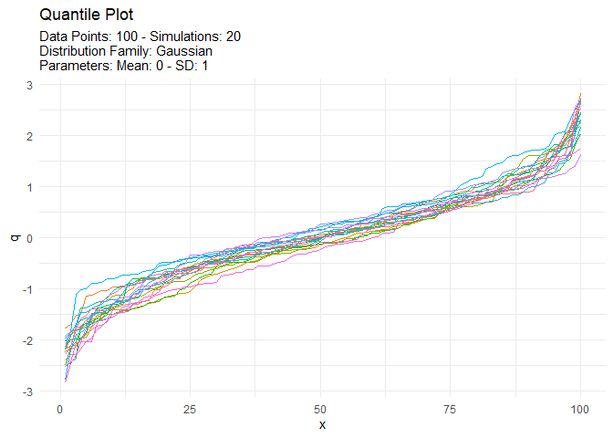
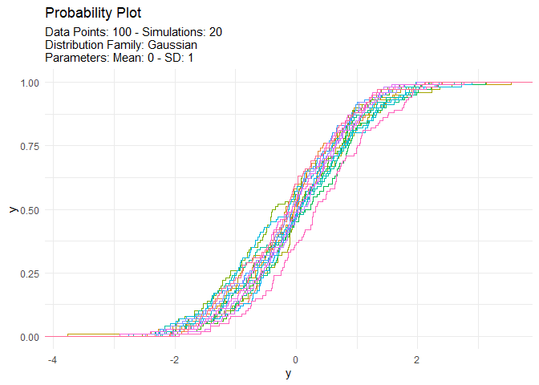
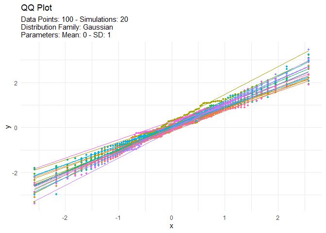

The goal of TidyDensity is to make working with random numbers from different distributions easy. All tidy_ distribution functions provide the following components:
- [
r_] - [
d_] - [
q_] - [
p_]
Installation
You can install the released version of TidyDensity from CRAN with:
install.packages("TidyDensity")And the development version from GitHub with:
# install.packages("devtools")
devtools::install_github("spsanderson/TidyDensity")Example
This is a basic example which shows you how to solve a common problem:
library(TidyDensity)
library(dplyr)
library(ggplot2)
tidy_normal()
#> # A tibble: 50 × 7
#> sim_number x y dx dy p q
#> <fct> <int> <dbl> <dbl> <dbl> <dbl> <dbl>
#> 1 1 1 -1.87 -3.51 0.000235 0.0307 -1.87
#> 2 1 2 -0.839 -3.37 0.000617 0.201 -0.839
#> 3 1 3 0.580 -3.22 0.00147 0.719 0.580
#> 4 1 4 -0.0620 -3.07 0.00322 0.475 -0.0620
#> 5 1 5 0.360 -2.92 0.00644 0.641 0.360
#> 6 1 6 -0.165 -2.78 0.0118 0.434 -0.165
#> 7 1 7 -1.65 -2.63 0.0201 0.0494 -1.65
#> 8 1 8 -0.277 -2.48 0.0315 0.391 -0.277
#> 9 1 9 1.77 -2.34 0.0461 0.961 1.77
#> 10 1 10 0.604 -2.19 0.0628 0.727 0.604
#> # ℹ 40 more rowsAn example plot of the tidy_normal data.
tn <- tidy_normal(.n = 100, .num_sims = 6)
tidy_autoplot(tn, .plot_type = "density")
tidy_autoplot(tn, .plot_type = "quantile")
tidy_autoplot(tn, .plot_type = "probability")
tidy_autoplot(tn, .plot_type = "qq")
We can also take a look at the plots when the number of simulations is greater than nine. This will automatically turn off the legend as it will become too noisy.
tn <- tidy_normal(.n = 100, .num_sims = 20)
tidy_autoplot(tn, .plot_type = "density")
tidy_autoplot(tn, .plot_type = "quantile")
tidy_autoplot(tn, .plot_type = "probability")
tidy_autoplot(tn, .plot_type = "qq")